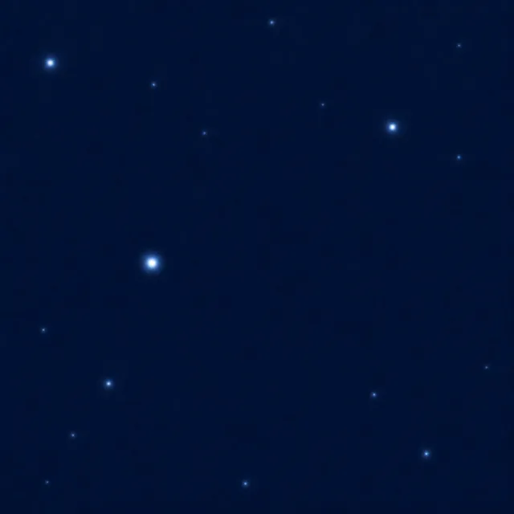
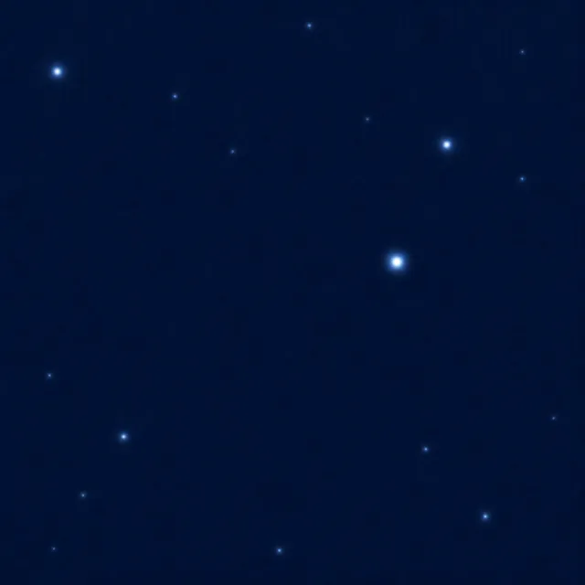
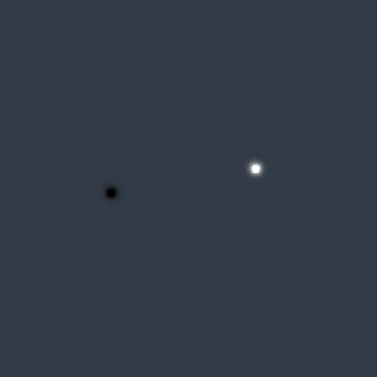

The sky is never
the same twice.
Stars stay put.
One doesn’t.
Can you spot
what changed?
Loading 3D model…
Real NASA images,
straight from space.
Drag to rotate it
NASA telescope
Your screen
Every color tells
a different story.
Color 1 / 102
drag across the colors
How we find a change

Earlier
Later
What changedFive objects to try
Find what moved.
You found it!
Type coordinates
Space gives itself away
in two ways.
Barnard’s StarWISE 0855Epsilon Indi B
RW AurigaeR Draconis
Pick a spot.
Watch it change.
Explore the sky
Sources & credits
This publication makes use of data products from the Spectro-Photometer for the History of the Universe, Epoch of Reionization and Ices Explorer (SPHEREx), which is a joint project of the Jet Propulsion Laboratory and the California Institute of Technology, and is funded by the National Aeronautics and Space Administration.